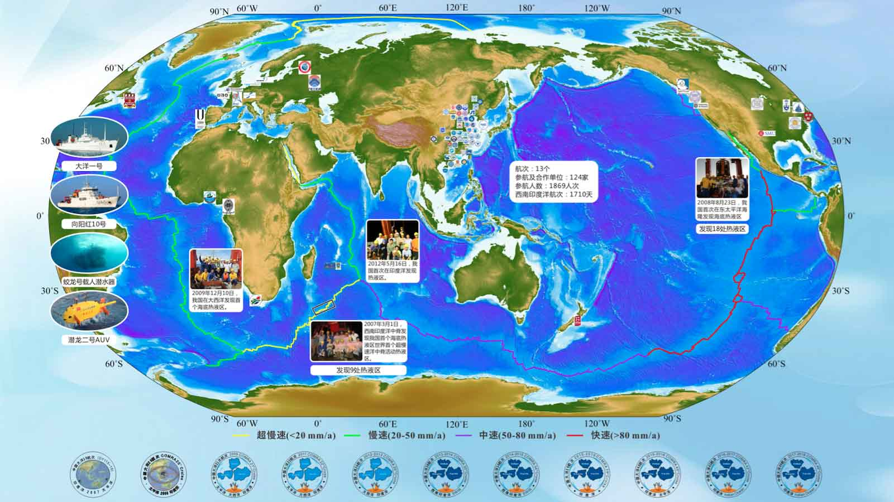
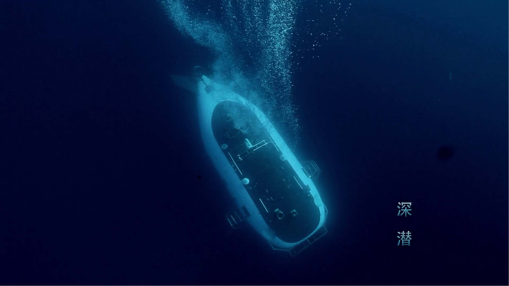

多金属硫化物资源与环境评价项目
关于我们
项目简介
Working Group
联系我们
最新消息
航次介绍
研究进展
科考采风
媒体聚焦
Site


最新消息
阅读更多
西南印度洋项目组诚邀博后加盟，研究生报考
[2019-03-15]
大洋52航次B段科学考察将于5月开启
[2019-03-13]
海洋二所出版海底硫化物勘查方法与技术专著
[2018-12-26]
第五届中俄大洋中脊硫化物...
[2018-12-13]
海洋二所推动的InterRidge...成立
[2018-12-10]
深海电法关键...获部级一等奖
[2018-11-05]
大洋49航次第一航段完成，台风...
[2018-01-16]
”潜龙二号“AUV航次首潜成功...
[2018-02-12]
【大洋49航次】“潜龙二号”第二航段完美收官
[2018-03-05]
国家海洋局印发：《深海海底区域资源勘探...》
[2018-01-04]
航次介绍
阅读更多
【大洋49航次】为海底“做CT”，为地球“诊脉”
[2018-05-16]
【大洋49航次】业务化运行的“潜龙二号”
[2018-03-07]
【大洋49航次】“潜龙二号”的新本领：无母船值守作业
[2018-03-06]
【大洋49航次】“潜龙二号”AUV第二航段完美收官
[2018-03-05]
【大洋49航次】”潜龙二号“AUV航次首潜成功...
[2018-02-12]
【大洋49航次】第二航段首战发现热液异常
[2018-02-11]
【大洋49航次】60天，七项任务，六大成果
[2018-02-07]
【大洋49航次】成功回收锚系，创多项之最
[2018-01-09]
研究进展
阅读更多
西南印度洋脊中段...来自微地震活动的证据
[2019-01-30]
三步法”在洋中脊硫化物勘查远景调查中的应用
[2019-01-09]
洋中脊-地幔柱相互作用的新模式
[2019-01-10]
西南印度洋脊龙角区表层沉积物地球化学特征...的指示
[2018-12-29]
海洋二所出版海底硫化物勘查方法与技术专著
[2018-12-26]
超慢速扩张洋脊的玄武岩浆中硫的地球化学行为
[2018-12-30]
复杂作业条件下AUV近底磁测数据三维聚焦反演
[2018-12-04]
海底底质声学利器——海底沉积物声学特性测量设备谱系
[2018-11-19]
科考采风
阅读更多
科技日报：茫茫大海，搜寻海底地震仪是一种怎样的体验
[2018-05-16]
科技日报：连不上网！科考队员如何度过漫漫长夜？
[2018-04-08]
为船舶调查保障组的棒小伙们打call
[2018-01-18]
那年，我们看过的海踏过的浪
[2018-01-29]
现学现卖之短鳍领航鲸观察指南
[2018-01-30]
情牵“超级蓝血月”之夜
[2018-02-01]
49航次一航段首席、首席助理有话说
[2018-02-08]
小伙伴们已经按耐不住了
[2017-12-29]
媒体聚焦
阅读更多
海南广播电视总台： “深海勇士”号返航...深潜新纪录
[2019-03-09]
外媒记者首次跟拍”蛟龙号”，这一幕令其惊呼！
[2019-02-28]
难得一见！“深海勇士”潜水器在“西风带”捞到稀世珍宝！
[2019-01-28]
中国海洋报：大洋49航次第四航段科考作业顺利收官
[2018-06-22]
完成异常探测...大洋49航次第四航段科考收官
[2018-06-21]
科技日报：西南印度洋，这里的热液生物不一般
[2018-06-20]
大洋49航次科考深海照片独家呈现，这些海底动物你认识几个
[2018-05-20]
科技日报：茫茫大海，搜寻海底地震仪是一种怎样的体验
[2018-05-16]